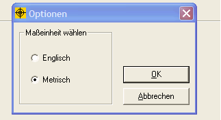

Maßeinheiten
Das ProFume Fumiguide Programm arbeitet mit englischen und metrischen
Maßeinheiten. Klicken Sie in der Funktionsleiste oben auf Ansicht und
wählen Sie Optionen.
Wählen Sie entweder englische oder metrische Maßeinheiten. Die so gewählte Maßeinheit kann jederzeit auf diese Weise innerhalb eines Auftrags geändert werden.
